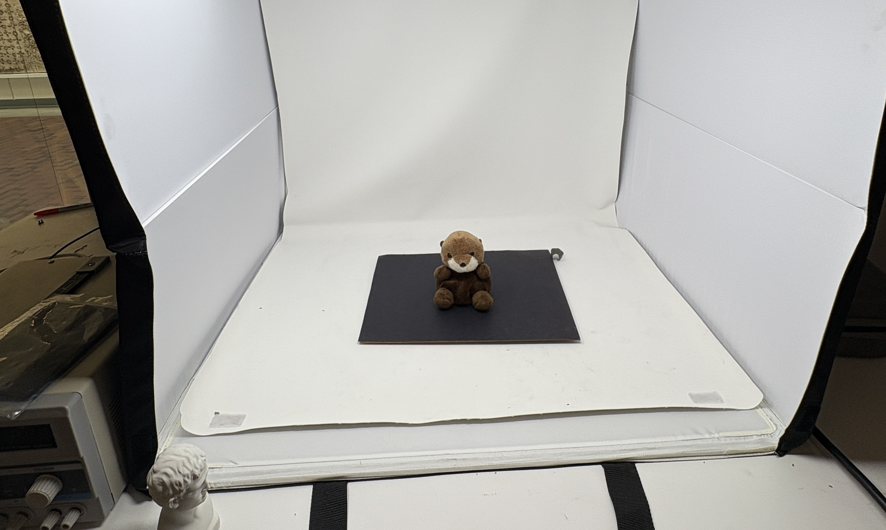
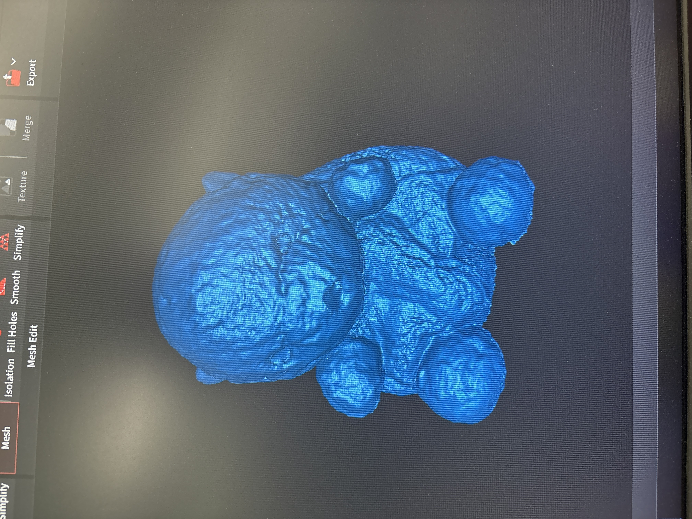
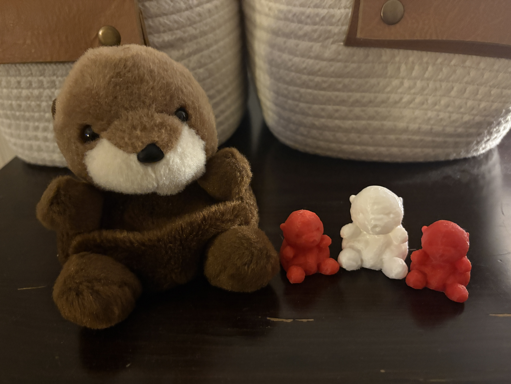
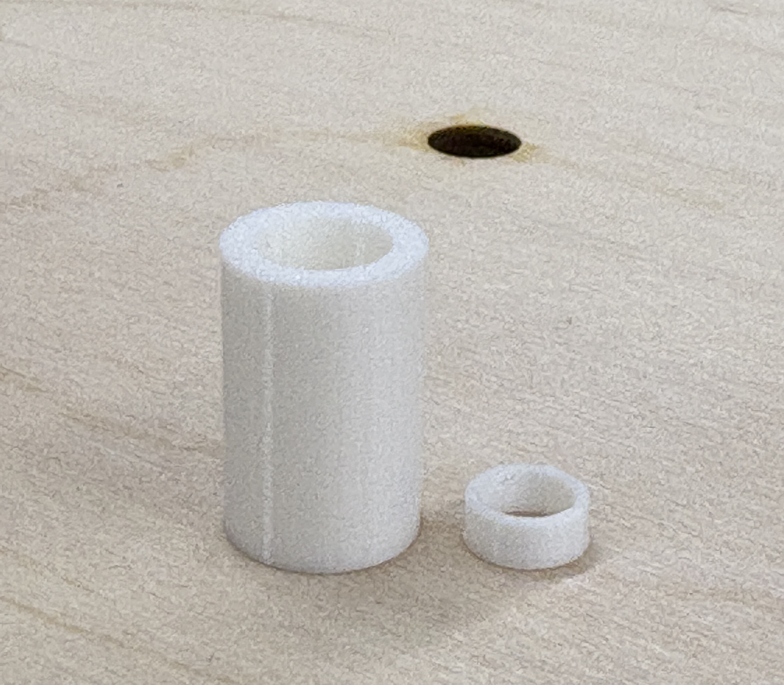
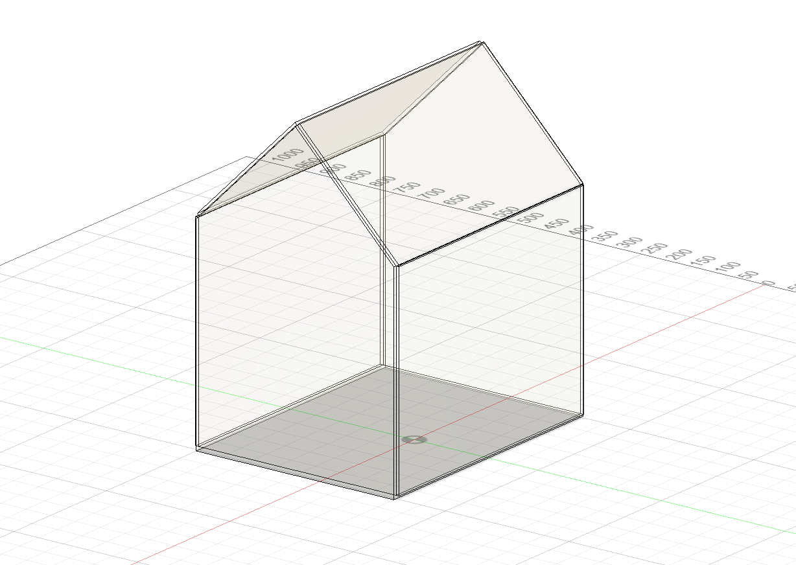
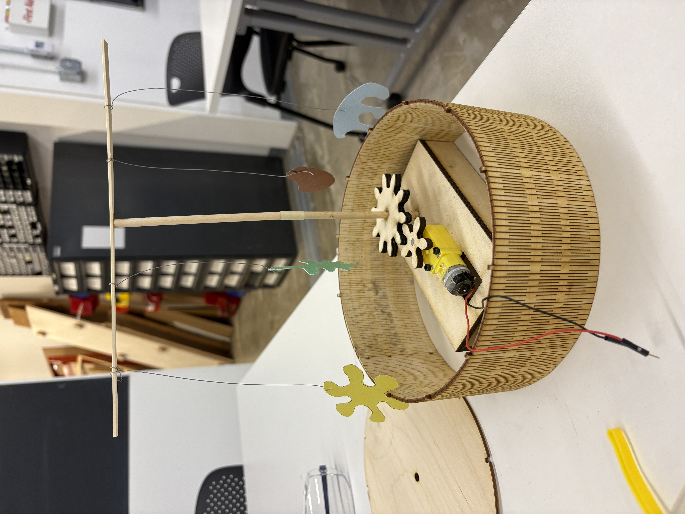
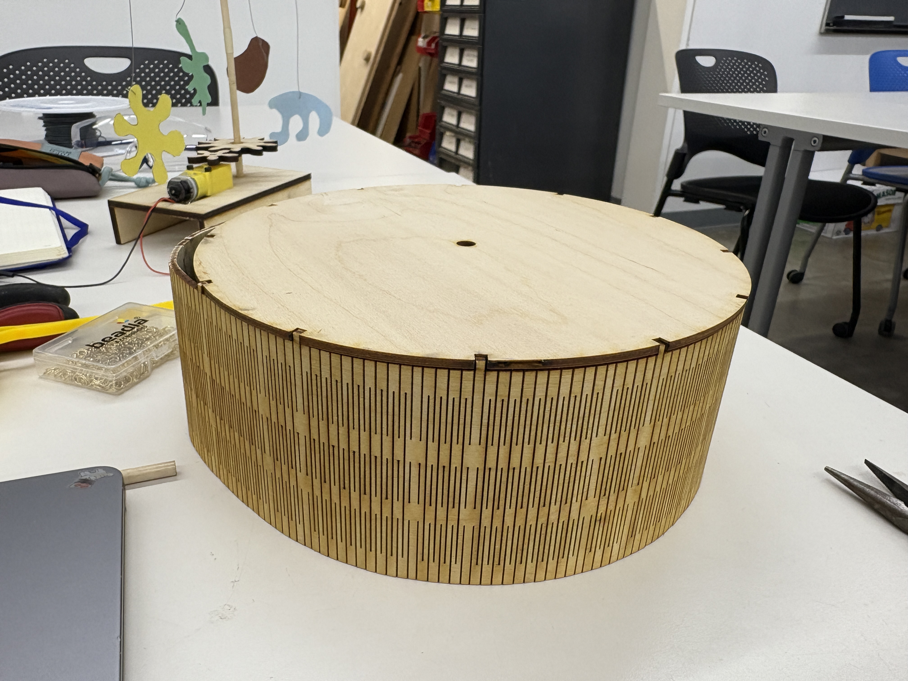

<div class="textcontainer">
<p class="margin"> </p>
<h1>🗿 Week 5: 3D Design 🗿</h1>
<br></br>
<h2>Part I: Scan Something!</h2>
<br></br>
<p>This week, I decided to scan and print a miniature version of one of my favorite stuffies, an otter 🦦 from the <a href="https://www.montereybayaquarium.org/">Monterey Bay Aquarium</a> named Inspector Gravlax.</p>

<p style="text-align: center;"><em>Gravlax awaiting his scanning!</em></p>
<p>Using the Revopoint scanner and photobooth were fairly straightforward. I did a few different scans and learned that I achieved the best results when I&nbsp;placed&nbsp;the otter on the turntable, fixed the scanner in one elevated spot looking down at Inspector Gravlax, and slowly revolved the turntable until I achieved a complete scan. I also used the Revopoint software to clean up the scan, removing extraneous pieces, filling in the hole on the base, and smoothing the texture created by Gravlax's hair. This was&nbsp;largely a success!</p>
<div style="display: flex; justify-content: center; gap: 20px;">
<img src="IMG_4794.JPG" alt="Image 1" style="width:300px;">

</div>
<p class="margin"> </p>
<div class="flexrow">
<a id="btn" href="Inspector Gravlax.stl" download>Inspector Gravlax RevoScan STL File
</a>
</div>
<p class="margin"> </p>
<br></br>
<h2>Part II: Print Something!</h2>
<br></br>
<p>I decided to print a miniature version of Inspector Gravlax to keep on my desk. Setting up the print file was fairly straightforward &mdash; I converted the mesh from RevoScan into an .stl file to place into Prusa Slicer. I used organic supports to help&nbsp;ensure the overhang on Gravlax's chin printed properly, and 20% infill so the final print would be sturdy yet light.</p>

<p style="text-align: center;"><em>MY POWERFUL OTOWOWOWOW ARMY! 🦦🦦🦦</em></p>
<p>The print was a success! It seems that the base fill-in in RevoScan wasn't perfectly flat, so I had to sand down the bottom of the print so it would sit flush with the table. In the future, I would consider refining this in Blender before printing to achieve a higher quality finish.</p>
<p>I also 3D printed a few pieces for my kinetic mobile that, to date, have been challenging to fabricate through subtractive methods:</p>
<ul>
<li><p class="p1"><strong>New gears:</strong> I needed to make my gears taller (10 mm) for the final version to&nbsp;accommodate the magnets I want to add to make the shaft removable relative to the exterior housing.</li>
<li><p class="p1"><strong>Proper spacers:</strong> I was able to ditch the stacked washers I've been using to date to keep the two gears at the right height by 3D printing fit-for-purpose versions</li>
<li><p class="p1"><strong>New gear + motor platform:</strong> This&nbsp;previously was&nbsp;a bit wonky, as I had constructed it out of glued plywood pieces. The 3D printed platform is much more sturdy.</li>
</ul>
<div style="display: flex; justify-content: center; gap: 20px;">
<img src="IMG_5124.jpg" alt="Image 1" style="height:300px;">

</div>
<p class="margin"> </p>
<div class="flexrow">
<a id="btn" href="Week 5 3D Printing Files.zip" download>Kinetic Mobile STL Files
</a>
</div>
<p class="margin"> </p>
<br></br>
<h2>Part III: Detail Final Project</h2>
<br></br>
<p>For my final project, I want to create a tabletop sized smart greenhouse. I envision the greenhouse itself to have a clean and elegant design, with space to accommodate the different "smart" features I want to add, leveraging sensors and micro-controllers.</p>

<p>I have not formalized a BOM yet, but initial hypothesis on items I will need:</p>
<ul>
<li><p class="p1"><strong>Clear acrylic</strong>, to construct the greenhouse walls and roof (potentially colored transparent acrylic?)</li>
<li><p class="p1">Potentially <strong>wood</strong> to add frame accents to the greenhouse</li>
<li><p class="p1"><strong>Plant pot and drip tray</strong>, which I plan to throw out of ceramic to accommodate a single plant</li>
<li><p class="p1"><strong>Soil</strong></li>
<li><p class="p1"><strong>Moisture sensor</strong></li>
<li><p class="p1"><strong>Light sensor OR timer</strong> (depending on how I want to operate the lights)</li>
<li><p class="p1"><strong>Two microcontrollers</strong>, one for each sensor</li>
<li><p class="p1"><strong>Water sprayer, tubing, and motor</strong> to be controlled based on moisture sensor (I imagine that when the soil is sensed to be dry, the motor will turn on, thus opening a gate which allows the water to spray or drip)</li>
<li><p class="p1"><strong>Grow lights</strong>, to be controlled based on light sensor</li>
</ul>
<p>Key questions that I want to answer over the coming weeks include:</p>
<ul>
<li><p class="p1">Can I build a <strong>responsive water sprayer</strong> that activates when soil is sensed to be dry? (probably the most challenging part of this project)</li>
<li><p class="p1">Can I build a <strong>responsive grow light</strong> that turns on when light is sensed to be low and/or at certain times?</li>
<li><p class="p1">How should the <strong>greenhouse itself be constructed</strong>? Should I just slot the laser-cut acrylic pieces together, use bolts / nuts, etc?</li>
<li><p class="p1">How <strong>should the greenhouse open</strong>? Do I want to put a door on it for easy access?</li>
</ul>
<br></br>
<h2>Part IV (bonus!): Keep Working on Kinetic Mobile</h2>
<br></br>
<img src="IMG_5022.JPG" alt="kerf" class="center">
<p style="text-align: center;"><em>Me, in the trenches with many beautiful kerf cut scraps that alas did not meet my needs :(</em></p>
<p>Finally, I continue to grind away at my kinetic mobile! In addition to the 3D printing accomplishments above, this week I:</p>
<ul>
<li><p class="p1"><strong>Prototyped the exterior housing</strong> EXTENSIVELY. It took many practice cuts to figure out a kerf pattern and laser cutter settings that would produce my desired output: a single piece of cut plywood that could form the entire outer walls of my circular housing. I finally got this to work, but my tabs to fit the walls together were a bit off, so need to update and refine.</li>
<li><p class="p1">Assembled the <strong>final version of the laser cut ornaments</strong> (transparent colored acrylic) attached to the top hanging bar (mirrored acrylic) via gold chain and jump rings.</li>
<li><p class="p1">Designed the <strong>system for making the shaft come apart</strong> so I can fit it into the housing.</li>
<li><p class="p1"><strong>Ordered the three-way switch</strong> that will ultimately be mounted to the top of the exterior housing.</li>
</ul>
<div style="display: flex; justify-content: center; gap: 20px;">


</div>
<p style="text-align: center;"><em>Huge win of the week was laser-cutting a long skinny piece of plywood that successfully wrapped into a ring of my desired diameter (~24 cm) !!!</em></p>
<p>I'm hoping that next week we can finish things up! Next steps are:</p>
<ul>
<li><p class="p1">Updating the <strong>kerf cut Illustrator file</strong> (fixing the tabs and adding a hole for the wires to come out, maybe will pull into Fusion to do these edits)</li>
<li><p class="p1">Updating the <strong>housing top Illustrator file</strong> (fixing the tabs, adding the mounting slot for the switch)</li>
<li><p class="p1">Creating&nbsp;a <strong>base Illustrator file</strong> (same design as the housing, just with no mounting slot)</li>
<li><p class="p1"><strong>Laser cutting</strong> the updated kerf cut piece (wood), housing top (mirrored acrylic), and housing base (wood)</li>
<li><p class="p1"><strong>Assembling the housing</strong> (wood gluing the kerf cut ring together, wood gluing that to the base, and then dropping in the top)</li>
<li><p class="p1"><strong>Assembling the&nbsp;bottom part of the shaf</strong>t: gear glued onto shaft, with magnet on top</li>
<li><p class="p1"><strong>Assembling the top part of the shaft</strong>: top hanging bar for ornaments glued onto top of shaft, magnet glued onto bottom</li>
<li><p class="p1"><strong>Coding up my three-way switch</strong> with the Arduino</li>
<li><p class="p1"><strong>Wiring up my three-way switch</strong> and soldering</li>
<li><p class="p1">Using nuts + bolts to <strong>secure my three way switch</strong> to the top of the housing</li>
<li><p class="p1"><strong>Adding a power supply</strong> (a battery would be pretty sweet)</li>
<li><p class="p1"><strong>DOING FINAL ASSEMBLY AND RUNNING IT!</strong></li>
</ul>
<div style="text-align: center;">
<video width="480" height="360" controls>
<source src="IMG_5116.MOV" type="video/mp4">
Your browser does not support the video tag.
</video>
</div>
<p style="text-align: center;"><em>Ornaments looking good!</em></p>
</div>